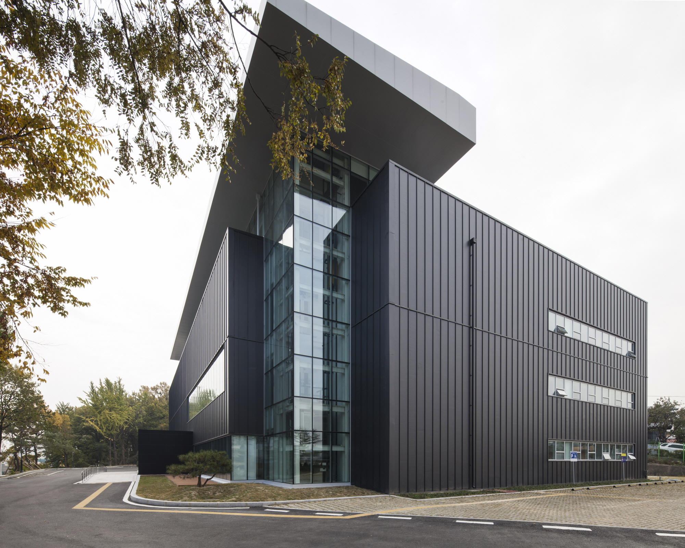

청주시립미술관
| 주소 | 충청북도 청주시 서원구 충렬로18번길 50 (사직동) |
|---|---|
| 연락처 | 043-201-2650 |
| 홈페이지 | https://cmoa.cheongju.go.kr/www/index.do |
2016년 7월 옛 KBS 방송국 건물을 리모델링해 개관한 청주의 대표 공립미술관이다. 실험적·선도적 창작활동을 조명하고 차세대 한국미술을 이끌 작가를 발굴·지원하는 창작스튜디오를 운영하고 있다. 본관 외에 대청호미술관·청주미술창작스튜디오·오창전시관 등 4관 체제로 운영되며, 다양한 기획전과 현대미술 강좌, 시민 참여 프로그램을 무료로 제공하며 청주 미술 문화의 중심 역할을 하고 있다.
-
청주시립미술관은 청주 서원구 사직동에 위치합니다.
대중교통 이용 시
청주 시내버스 '사직동' 또는 '충렬로' 방면 노선 이용
주요 이용 노선: 314, 412, 832번 등
정류장 하차 후 도보 5분 이내
자가용 이용 시
내비게이션에 '청주시립미술관' 입력
미술관 전용 주차장 이용 가능
청주 시내(상당구)에서 차로 약 10~15분 소요
KTX 이용 시
오송역 하차 후 시내버스 환승 약 30분 소요
청주역 하차 후 시내버스 환승 약 20분 소요 -
청주시립미술관 주변 문화·예술 명소를 함께 둘러보세요.
청주아트홀
주소: 충청북도 청주시 서원구 흥덕로 69 (사직동)
설명: 미술관에서 도보 10분 거리의 공연장. 클래식 공연 최적화 시설을 갖추고 있습니다.
청주예술의전당
주소: 충청북도 청주시 서원구 흥덕로 위치
설명: 청주의 대표 복합 문화공연시설. 대공연장·소공연장·전시실을 갖추고 있습니다.
무심천 자전거길
주소: 충청북도 청주시 서원구 무심서로 일대
설명: 미술관 인근을 흐르는 무심천 변의 산책·자전거 코스. 계절마다 아름다운 풍경을 자랑합니다.
청주고인쇄박물관
주소: 충청북도 청주시 흥덕구 직지대로 713
설명: 세계 최초 금속활자본 직지의 발상지. 차로 약 10분 거리입니다.
-
청주시립미술관 인근 사직동·서원구 추천 맛집입니다.
사직동 해장국 골목
주소: 충청북도 청주시 서원구 사직대로 일대
설명: 청주 현지인들이 즐겨 찾는 해장국 전문 식당가입니다.
무심천 카페거리
주소: 충청북도 청주시 서원구 무심서로 일대
설명: 무심천 변 산책 후 들르기 좋은 감성 카페·레스토랑이 모여 있습니다.
서원구 삼겹살 거리
주소: 충청북도 청주시 서원구 사창동 일대
설명: 현지인들이 즐겨 찾는 고기 구이 식당들이 밀집한 거리입니다.
-
청주시립미술관 인근 추천 숙소입니다.
1. 부티크호텔 지 청주점
주소: 충청북도 청주시 상당구 상당로 55번길 40
특징: 청주 도심 위치. 미술관·아트홀 이동 편리.
가격대: 약 66,000원부터
2. 청주나무호텔
주소: 충청북도 청주시 상당구 상당로 81번길 36
특징: 청주 전 지역 이동에 편리한 도심 숙소.
가격대: 약 63,000원부터
3. 호텔 야자 서문점
주소: 충청북도 청주시 상당구 서문로 89
특징: 가성비 좋은 도심 숙소.
가격대: 약 39,000원부터
* 위 가격은 2026년 기준이며 예약 시점에 따라 변동될 수 있습니다.